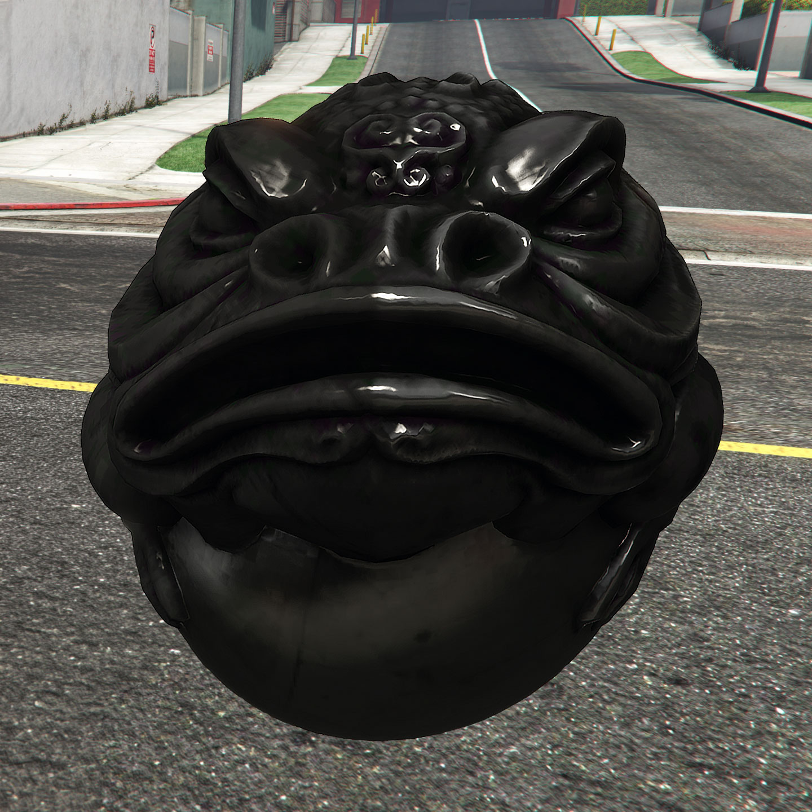
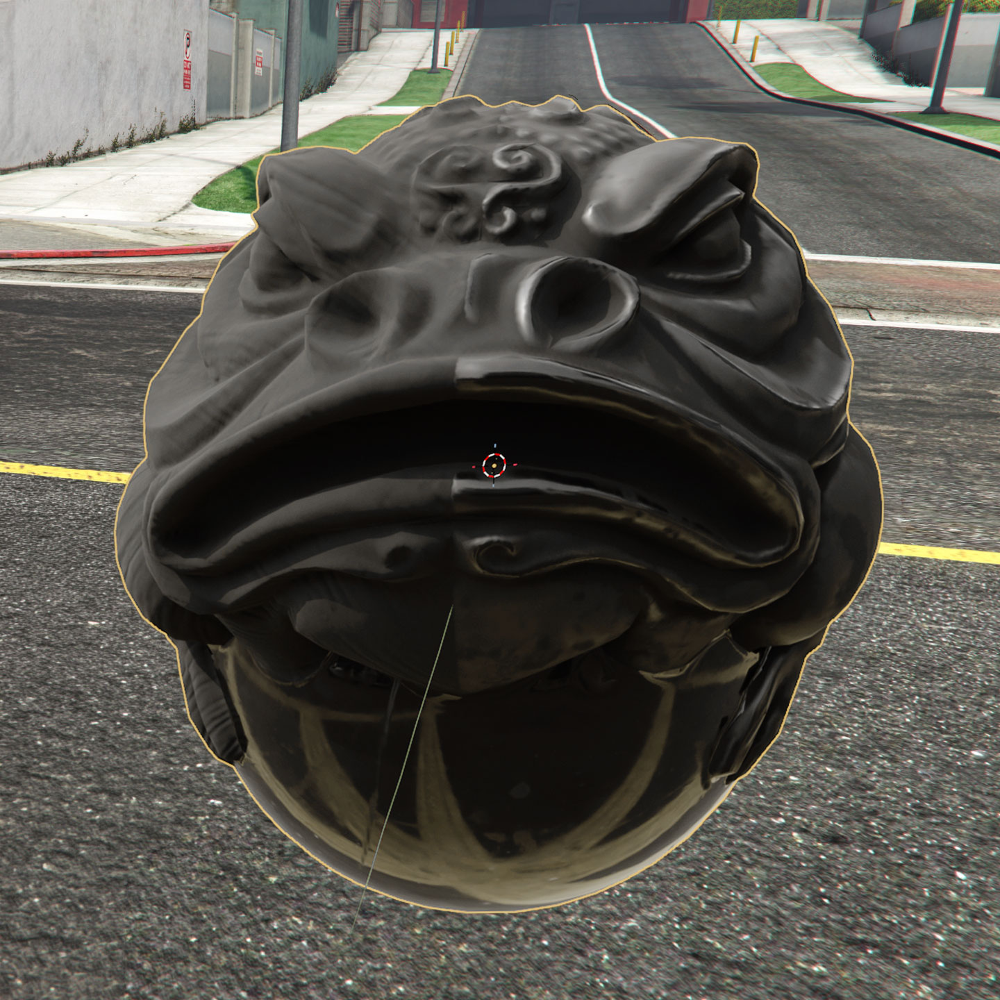
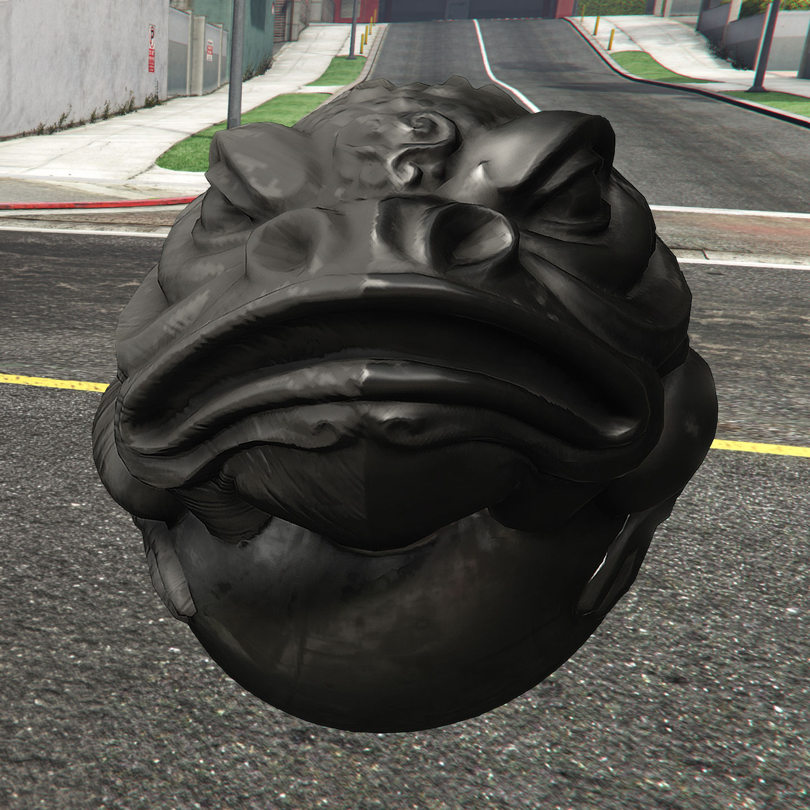

01 / BEFORE
Substance Painter + Clear Baker

GTA V result · original comparison capture
02 / PBR REFERENCE
Blender

Blender PBR · material appearance reference
03 / AFTER
Substance Painter + PBR2GTA

GTA V result · converted with PBR2GTA
01Predictable PBR conversionTranslate PBR maps into GTA material textures
and shader settings.
02Work with PNG. Export DDS.Format selection, compression and mipmaps
are handled by the add-on.